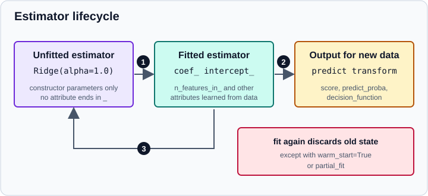

The scikit-learn Estimator API
|
This content was generated with the assistance of AI and should be verified against the official documentation before being relied on in production. |
Almost everything in scikit-learn follows one small, consistent interface: the estimator API. Once you know it, every
classifier, regressor, clusterer, scaler or dimensionality reducer in the library, and every third-party package that
follows the convention, is used in the same way, and any of them can be placed in a Pipeline, a cross-validation or a
hyperparameter search. This page explains the roles an object can play, the methods and attributes that define each
role, the conventions around fitted attributes and input validation, the base classes and mixins that implement the
interface, and how to write your own estimator. The companion page
get_params, set_params and clone covers the parameter side of the
API, and the Glossary defines each term precisely.
The page targets scikit-learn 1.9 with NumPy 2.5 and pandas 3.1 and was checked in October 2026. Examples target Python 3.13 or 3.14 and were run on Python 3.13. Every example was run with Python 3.13.18 and scikit-learn 1.9.1 and the output shown is the real output.
Roles: estimator, predictor, transformer, model
The official developer guide distinguishes several roles. One class can play several of them.
| Role | What it provides | Typical classes |
|---|---|---|
Estimator |
|
every class below |
Predictor |
|
|
Transformer |
|
|
Model |
|
most predictors |
Estimators come in two kinds. Simple estimators such as LogisticRegression learn from data. Meta-estimators such as
Pipeline or GridSearchCV wrap other estimators and delegate to them.
The diagram shows a simplified view: the real classes inherit from several more internal bases (for example
LinearClassifierMixin and SparseCoefMixin for LogisticRegression). Inheritance order matters: write the mixins to
the left of BaseEstimator so that the method resolution order is correct.
The life cycle of an estimator
An estimator is created with parameters, fitted on data, and then used on new data. Fitting again discards the previous
state, and clone returns a fresh unfitted copy.

-
Create: the constructor stores its arguments and does nothing else. The constructor must not look at data, validate arguments or compute anything.
-
Fit:
fitvalidates the data, learns attributes and returnsself(transition 1). -
Use:
predict,transform,scoreand the related methods apply the learned state to new data (transition 2). They do not change the estimator. -
Copy:
clonecreates an unfitted estimator with the same parameters (transition 3).
A classifier in action:
from sklearn.datasets import load_iris
from sklearn.linear_model import LogisticRegression
X, y = load_iris(return_X_y=True)
clf = LogisticRegression(max_iter=200)
print(hasattr(clf, "coef_")) # not fitted yet
print(clf.fit(X, y) is clf) # fit returns the estimator itself
print(clf.coef_.shape, clf.intercept_.shape, clf.classes_, clf.n_features_in_)
print(clf.predict(X[:3]))
print(clf.predict_proba(X[:2]).round(3))
print(clf.decision_function(X[:2]).round(2))
print(round(clf.score(X, y), 3))False True (3, 4) (3,) [0 1 2] 4 [0 0 0] [[0.982 0.018 0. ] [0.972 0.028 0. ]] [[ 7.34 3.36 -10.7 ] [ 6.94 3.41 -10.35]] 0.973
predict returns class labels, predict_proba one probability per class (the columns follow the order of classes_) and
decision_function the raw scores from which predict decides. The score of a classifier is accuracy.
fit
fit is the method where learning happens. The conventions are:
-
Signature:
fit(X, y)for supervised estimators andfit(X, y=None)for unsupervised ones. Even unsupervised estimators accept and ignorey, so that they can sit in a pipeline that mixes supervised and unsupervised steps. The same holds forfit_transform,fit_predict,scoreandpartial_fit: when they exist,yis the second argument. -
Xhas shape(n_samples, n_features).yhas shape(n_samples,)(or two dimensions for multi-output). Different numbers of rows raiseValueError. -
Data-dependent options such as
sample_weightare passed tofit; everything that can be decided before seeing the data (a regularisation strength, a tolerance) is a constructor parameter. -
Returns
self, which enables method chaining. -
Replaces previous state:
fit(X1)followed byfit(X2)is equivalent tofit(X2)alone, apart from randomness controlled byrandom_state. Exceptions are estimators withwarm_start=True, which start from the previous solution, andpartial_fit, which updates the model incrementally with batches. -
No reference to the data: the fitted estimator does not keep
Xandy, except where the algorithm needs them (nearest neighbors, kernel methods with precomputed kernels).
Learned attributes and the trailing underscore
Everything an estimator learns from data is stored in an attribute whose name ends with an underscore: coef_,
intercept_, classes_, cluster_centers_, feature_importances_. Attributes that are internal and not part of the
public interface start with an underscore. Constructor parameters never end in an underscore, and the constructor never
creates attributes ending in one. This makes it possible to tell at a glance what is configuration and what is learned,
and it is what check_is_fitted uses to decide whether an estimator has been fitted:
from sklearn.exceptions import NotFittedError
from sklearn.linear_model import LogisticRegression
from sklearn.utils.validation import check_is_fitted
try:
check_is_fitted(LogisticRegression())
except NotFittedError as error:
print(type(error).__name__)
print(error)NotFittedError This LogisticRegression instance is not fitted yet. Call 'fit' with appropriate arguments before using this estimator.
Source: https://scikit-learn.org/stable/modules/generated/sklearn.utils.validation.check_is_fitted.html
Calling predict or transform on an estimator that was not fitted raises NotFittedError, which derives from both
ValueError and AttributeError.
n_features_in_ and feature_names_in_
Estimators that take tabular input record two universal attributes at fit time. n_features_in_ is the number of
columns, and every later call must supply the same number. feature_names_in_ holds the column names when the input was
a data frame (pandas or Polars) with string column names. The names are checked in later calls, so a model fitted on a
data frame notices when the columns are renamed, reordered or missing:
from sklearn.datasets import load_iris
from sklearn.decomposition import PCA
from sklearn.preprocessing import StandardScaler
X, y = load_iris(return_X_y=True, as_frame=True)
sc = StandardScaler().fit(X)
print(sc.n_features_in_)
print(sc.feature_names_in_)
print(sc.mean_.round(2), sc.scale_.round(2))
print(sc.get_feature_names_out())
pca = PCA(n_components=2).fit(X)
print(pca.get_feature_names_out(), pca.explained_variance_ratio_.round(3))
try:
sc.transform(X.rename(columns={"sepal length (cm)": "a"}))
except ValueError as error:
print(error)4 ['sepal length (cm)' 'sepal width (cm)' 'petal length (cm)' 'petal width (cm)'] [5.84 3.06 3.76 1.2 ] [0.83 0.43 1.76 0.76] ['sepal length (cm)' 'sepal width (cm)' 'petal length (cm)' 'petal width (cm)'] ['pca0' 'pca1'] [0.925 0.053] The feature names should match those that were passed during fit. Feature names unseen at fit time: - a Feature names seen at fit time, yet now missing: - sepal length (cm)
A wrong number of columns is reported in the same way:
from sklearn.datasets import load_iris
from sklearn.linear_model import LogisticRegression
X, y = load_iris(return_X_y=True)
clf = LogisticRegression(max_iter=200).fit(X, y)
try:
clf.predict(X[:, :3])
except ValueError as error:
print(error)X has 3 features, but LogisticRegression is expecting 4 features as input.
get_feature_names_out returns the names of the output columns of a transformer: the input names for a scaler, and
generated names such as pca0 for a transformer that creates new features. It is what makes data frame output possible
(see below). Models store these attributes through validate_data, described in the section on custom estimators.
predict, predict_proba and decision_function
A predictor implements predict(X) and returns an array with one prediction per row.
-
Regressors return numbers.
-
Classifiers return labels taken from
classes_. Labels may be strings or integers and need not be consecutive.classes_lists them in sorted order, and the columns ofpredict_proba,predict_log_probaanddecision_functionfollow that order. -
Clusterers store the labels of the training samples in
labels_and may offerpredictfor new samples. -
Outlier detectors return 1 for inliers and -1 for outliers from
predict.
Not every classifier has predict_proba: support vector machines only provide it with extra work, and the
probability option of SVC is deprecated in 1.9 in favour of wrapping the classifier in
CalibratedClassifierCV. Probability quality is discussed in
Probability Calibration.
transform, fit_transform and inverse_transform
A transformer changes columns, never rows: it may add, remove or change features but must not change the number of
samples, and the output rows correspond to the input rows in the same order. fit_transform(X, y=None) is fit and
transform in one call and returns the transformed training data. It usually gives the same result as
fit(X).transform(X), and exists because computing both at once can be more efficient. Some transformers deliberately
differ: TargetEncoder.fit_transform uses cross fitting to avoid leakage, so it is not equal to
fit(X, y).transform(X). Use fit_transform on training data and transform on everything else.
Transformers that can undo their work implement inverse_transform. Clusterers and some unsupervised estimators combine
the roles: KMeans has fit_predict (equivalent to fit(X).predict(X)), transform (distances to each centre) and
score:
from sklearn.base import is_classifier, is_clusterer, is_outlier_detector, is_regressor
from sklearn.cluster import KMeans
from sklearn.datasets import make_blobs
from sklearn.ensemble import IsolationForest
from sklearn.linear_model import LogisticRegression, Ridge
X, _ = make_blobs(n_samples=100, centers=3, random_state=0)
km = KMeans(n_clusters=3, random_state=0)
print(km.fit_predict(X)[:10])
print(km.labels_[:10], km.cluster_centers_.shape)
print(km.transform(X[:1]).round(2), round(km.score(X), 1))
iso = IsolationForest(random_state=0).fit(X)
print(iso.predict(X[:5]), iso.score_samples(X[:2]).round(3))
for est in (LogisticRegression(), Ridge(), km, iso):
print(type(est).__name__, is_classifier(est), is_regressor(est),
is_clusterer(est), is_outlier_detector(est))[1 0 1 0 0 0 2 2 1 0] [1 0 1 0 0 0 2 2 1 0] (3, 2) [[3.97 0.78 4.88]] -168.6 [ 1 1 -1 1 1] [-0.475 -0.472] LogisticRegression True False False False Ridge False True False False KMeans False False True False IsolationForest False False False True
The helper functions is_classifier, is_regressor, is_clusterer and is_outlier_detector replace checks on the class name: meta-estimators use them to adapt to the kind of estimator they wrap.
score
score(X, y) returns a single number where higher is better: accuracy for classifiers (ClassifierMixin), the
coefficient of determination R squared for regressors (RegressorMixin), and the log likelihood or a negative
distance for some unsupervised models (KMeans returned the negative sum of squared distances above). It is a quick
default. For anything else use the metrics and the scoring argument described in
Metrics and Scoring.
Base classes and mixins
scikit-learn prefers duck typing to isinstance checks, but inheriting from the right classes saves boilerplate and
keeps your estimator consistent with future versions.
| Class | What you get |
|---|---|
|
|
|
|
|
|
|
|
|
|
|
|
|
a default |
|
marks meta-estimators |
|
|
|
|
You can inspect the inheritance of any class:
from sklearn.linear_model import LogisticRegression
print([cls.__name__ for cls in LogisticRegression.__mro__])['LogisticRegression', 'CallbackSupportMixin', 'LinearClassifierMixin', 'ClassifierMixin', 'SparseCoefMixin', 'BaseEstimator', 'ReprHTMLMixin', '_HTMLDocumentationLinkMixin', '_MetadataRequester', 'object']
CallbackSupportMixin is new in 1.9 and belongs to the experimental callback API described below. Private names such as
_MetadataRequester are implementation details that may change.
Keyword-only arguments
Since scikit-learn 1.0 (SLEP009) the constructors of estimators accept hyperparameters as keyword arguments only,
except for the few that are the obvious first argument. Passing a hyperparameter positionally raises TypeError:
import inspect
from sklearn.cluster import KMeans
from sklearn.preprocessing import StandardScaler
try:
StandardScaler(False)
except TypeError as error:
print(error)
print(KMeans(3))
print(inspect.signature(KMeans.__init__))StandardScaler.__init__() takes 1 positional argument but 2 were given KMeans(n_clusters=3) (self, n_clusters=8, *, init='k-means++', n_init='auto', max_iter=300, tol=0.0001, verbose=0, random_state=None, copy_x=True, algorithm='lloyd')
Older books call KMeans(8, "k-means++") or StandardScaler(True); write the names. The same applies to functions: the
data arguments X and y stay positional, while options after them are keyword-only. A related pitfall is that not
every first positional argument is the one you expect: in LogisticRegression the first positional slot is the deprecated
penalty, so LogisticRegression(1.0) does not set C.
Estimator tags
Since version 1.6 the capabilities of an estimator are exposed through a public tags API. __sklearn_tags__()
returns a Tags object describing, for example, the estimator type, whether sparse input is accepted and whether a
classifier supports more than two classes. Tags may depend on the parameters, so they are read from an instance. The
tools of scikit-learn (is_classifier, the common checks) read them; before 1.6 the mechanism was a private
_get_tags/_more_tags pair.
from sklearn.linear_model import LogisticRegression
tags = LogisticRegression().__sklearn_tags__()
print(tags.estimator_type, tags.input_tags.sparse, tags.classifier_tags.multi_class)classifier True True
To change the tags of your own estimator, override __sklearn_tags__, call super() first and edit the result, for
example setting tags.target_tags.single_output = False.
DataFrame output: set_output
Transformers return NumPy arrays by default. If a transformer defines get_feature_names_out and inherits
TransformerMixin, it also gets the set_output method. set_output(transform="pandas") makes it return a pandas data
frame with the feature names as columns; "polars" returns a Polars frame; the global
set_config(transform_output="pandas") does so for every transformer. Since 1.9 the data frame support is built on
narwhals.
from sklearn.datasets import load_iris
from sklearn.preprocessing import StandardScaler
X, y = load_iris(return_X_y=True, as_frame=True)
sc = StandardScaler().set_output(transform="pandas").fit(X)
out = sc.transform(X)
print(type(out).__name__)
print(out.head(2).round(3))DataFrame sepal length (cm) sepal width (cm) petal length (cm) petal width (cm) 0 -0.901 1.019 -1.34 -1.315 1 -1.143 -0.132 -1.34 -1.315
The details, including pipelines and ColumnTransformer, are on the page
pandas & polars Output (set_output).
Callbacks (experimental, new in 1.9)
scikit-learn 1.9 introduces an experimental callback API (SLEP023). Callbacks are objects attached to an estimator
with set_callbacks that are called during fit, for example to display progress or to record the score of each
iteration. sklearn.callback.ProgressBar shows a progress bar and ScoringMonitor records scores; the progress bar
needs the rich package. Only some estimators support callbacks so far (they inherit CallbackSupportMixin), and the
interface may change without the usual deprecation cycle, so avoid it in code that must be stable.
from sklearn.callback import ProgressBar
from sklearn.datasets import load_iris
from sklearn.linear_model import LogisticRegression
X, y = load_iris(return_X_y=True)
est = LogisticRegression(max_iter=200).set_callbacks(ProgressBar())
print(est.fit(X, y).score(X, y))LogisticRegression - fit ━━━━━━━━━━━━━━━━━━━━━━━━━━━━━━━━━━━━━━━━ 100% 0:00:00 0.9733333333333334
Writing your own estimator
A custom estimator that follows the conventions works with Pipeline, GridSearchCV and cross_val_score without
further effort. The rules of the developer guide are:
-
The constructor
__init__takes only keyword arguments with defaults, stores each one unchanged in an attribute of the same name, and does nothing else: no validation, no conversion, no learned values. Validation belongs infit, becauseset_params(used by searches) would bypass the constructor. -
fitvalidates the input withvalidate_data, learns attributes ending in_and returnsself. -
predictandtransformcallcheck_is_fittedand validate the input withreset=False. -
Mixins go on the left,
BaseEstimatoron the right.
A nearest-centroid classifier with a configurable power of the distance:
import numpy as np
from sklearn.base import BaseEstimator, ClassifierMixin
from sklearn.datasets import load_iris
from sklearn.utils.estimator_checks import check_estimator
from sklearn.utils.multiclass import unique_labels
from sklearn.utils.validation import check_is_fitted, validate_data
class CentroidClassifier(ClassifierMixin, BaseEstimator):
def __init__(self, metric_power=2):
self.metric_power = metric_power
def fit(self, X, y):
# checks X and y, sets n_features_in_ and feature_names_in_
X, y = validate_data(self, X, y)
self.classes_ = unique_labels(y)
self.centroids_ = np.vstack([X[y == c].mean(axis=0) for c in self.classes_])
return self
def predict(self, X):
check_is_fitted(self)
X = validate_data(self, X, reset=False)
distance = (np.abs(X[:, None, :] - self.centroids_[None]) ** self.metric_power).sum(axis=2)
return self.classes_[np.argmin(distance, axis=1)]
X, y = load_iris(return_X_y=True)
model = CentroidClassifier().fit(X, y)
print(model, round(model.score(X, y), 3), model.n_features_in_)
check_estimator(CentroidClassifier())
print("checks passed")CentroidClassifier() 0.927 4 checks passed
score comes from ClassifierMixin, and get_params from BaseEstimator. check_estimator runs the common checks of
the library on an instance, and parametrize_with_checks runs them as individual pytest tests. It may emit
SkipTestWarning for optional checks such as array API support. Run it in your test suite: it catches the usual
mistakes (modifying parameters in the constructor, forgetting to return self, wrong error types).
A transformer follows the same pattern with TransformerMixin:
import numpy as np
from sklearn.base import BaseEstimator, TransformerMixin
from sklearn.datasets import load_iris
from sklearn.utils.estimator_checks import check_estimator
from sklearn.utils.validation import check_is_fitted, validate_data
class QuantileClipper(TransformerMixin, BaseEstimator):
def __init__(self, q=0.05):
self.q = q
def fit(self, X, y=None):
X = validate_data(self, X)
self.low_, self.high_ = np.quantile(X, [self.q, 1 - self.q], axis=0)
return self
def transform(self, X):
check_is_fitted(self)
X = validate_data(self, X, reset=False)
return np.clip(X, self.low_, self.high_)
def get_feature_names_out(self, input_features=None):
names = getattr(self, "feature_names_in_", [f"x{i}" for i in range(self.n_features_in_)])
return np.asarray(names, dtype=object)
X, y = load_iris(return_X_y=True)
clipper = QuantileClipper()
print(clipper.fit_transform(X)[:2])
print(clipper.get_params())
check_estimator(QuantileClipper())
print("checks passed")[[5.1 3.5 1.4 0.2]
[4.9 3. 1.4 0.2]]
{'q': 0.05}
checks passed
fit_transform was inherited from TransformerMixin, and because the class defines get_feature_names_out, it also supports
set_output.
Other conventions for developers: an estimator can customise what check_is_fitted tests by implementing
__sklearn_is_fitted__; it can customise clone with __sklearn_clone__ (see
get_params, set_params and clone); the HTML representation shown in
notebooks is experimental; and the scikit-learn-contrib project template provides a ready package layout with
tests. Third-party estimators that pass check_estimator are said to be scikit-learn compatible.
Older conventions
| Older statement | Today |
|---|---|
Estimators are checked with |
Public tags: |
|
|
Validate with |
|
|
accept |